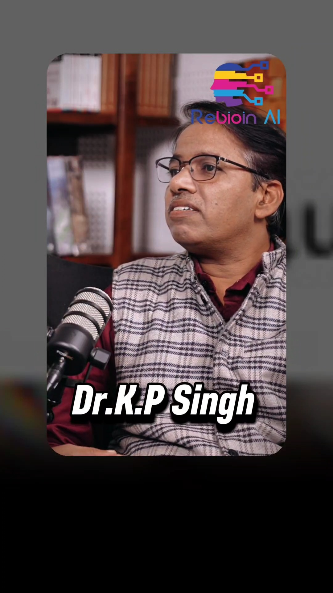

Interactive Session with Dr. K.P. Singh

In the latest episode of the REBION AI Podcast Series, we hosted an interactive session with Dr. K.P. Singh, an Associate Professor whose journey spans from mentoring IIT aspirants to shaping the next generation of researchers and innovators.
About the Guest
Dr. K.P. Singh has guided countless students through the challenges of competitive examinations and higher education. His experience as a mentor and academic gives him a unique perspective on what it truly takes to succeed in the sciences.
Key Themes from the Session
- Choosing the right path after school and graduation
- Preparing for competitive exams without losing curiosity
- The mindset required for research and innovation
- How students can combine fundamentals with modern skills like AI
- Lessons from decades of teaching and mentoring
Our Favourite Takeaway
"Curiosity is the real qualification." Dr. Singh emphasised that degrees and marks open doors, but a genuine desire to ask questions and explore is what makes a lasting scientist.
Watch the Session
The full interactive session is available in our podcast section. Whether you are a student, a parent or an educator, you will find practical and inspiring ideas to take away.